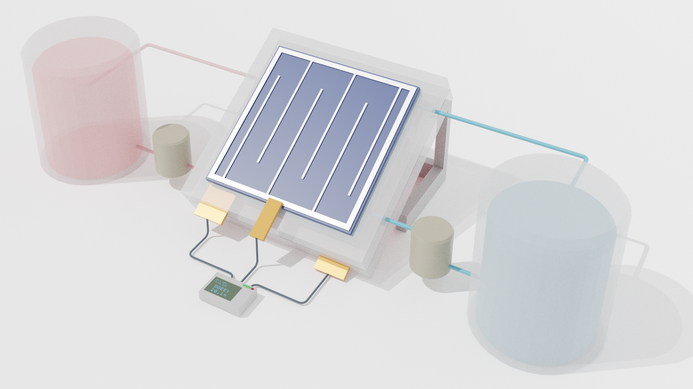
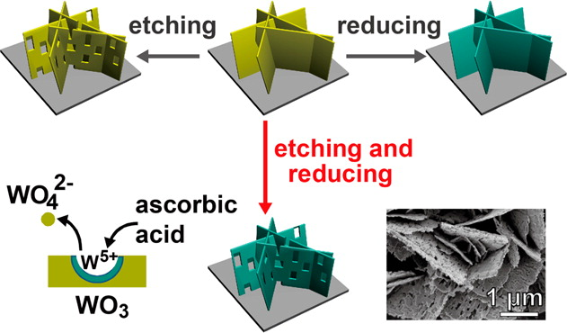

-
Li, W.; Yang, M.; Zhao, Z.; Zhao, M.; Ye, R.; Fu, B; Chen, P. Single-molecule reaction mapping uncovers diverse behaviours of electrocatalytic surface Pd–H intermediates Nat. Catal. 2025 (Link)

Many vital electrocatalytic transformations hinge on reactive surface metal–hydrogen intermediates (M–H), yet the low concentration and transient nature of such intermediates present formidable challenges to in-depth investigation. Here we use single-molecule super-resolution reaction imaging to directly probe surface palladium–hydrogen (Pd–H) intermediates on individual palladium nanocubes during electrocatalytic hydrogen evolution. Our approach visualizes hydrogen spillover from palladium to the surrounding substrate surface over hundreds of nanometres away and dissects substantial inter- and intraparticle heterogeneity. Through Gaussian-broadening kinetic analysis, we reveal that ensemble-averaged measurements systematically overestimate the stability of Pd–H*. Moreover, we resolve three subpopulations of palladium nanocubes with distinct reactivity features, uncovering critical correlations between intermediate stability, hydrogenation reactivity and transition-state properties. Our findings highlight the necessity of single-particle resolution for capturing the intrinsic complexity of electrocatalysts; our approach is also broadly applicable to interrogate surface-reactive intermediates across a wide array of electrocatalytic pathways.
In the News:
- A single-molecule view of surface Pd–H*, Nature Catalysis, 2025
- Breakthrough in Hydrogen Catalyst Research Using Single-Molecule, Engineeringness, 2025.
- Choi, G.†; Sullivan, P.†; Lv, X.-L.†; Li, W.†; Lee, K.; Kong, H.; Gessler, S.; Schmidt, J. R.; Feng, D.* Soft–Hard Zwitterionic Additives for Aqueous Halide Flow Batteries. Nature 2024 (Link)
- Zhao, M.; Li, W.; Yang, M.; Zhao, Z.; Ye, R.; Mao, X.; Padgett, P.; Chen, P.* Long-Range Enhancements of Micropollutant Adsorption on Metal-Promoted Photocatalysts. Nat. Catal. 2024 (Link)
- Fu, B.†; Mao, X.†; Park, Y.; Zhao, Z.; Yan, T.; Jung, W.; Francis, D. H.; Li, W.; Pian, B.; Salimijazi, F.; Suri, M.; Hanrath, T.; Barstow, B.; Chen, P. * Single-Cell Multimodal Imaging Uncovers Energy Conversion Pathways in Biohybrids. Nat. Chem. 2023 (Link)
- Lv, X.-L.†; Sullivan, P. T.†; Li, W.*; Fu, H.-C.; Jacobs, R.; Chen, C.-J.; Morgan, D.; Jin, S.; Feng, D. * Modular dimerization of organic radicals for stable and dense flow battery catholyte Nat. Energy 2023 (Link)
- Sullivan, P. T.†; Liu, H.†; Lv, X.†; Jin, S.; Li, W.*; Feng, D.* Viologen hydrothermal synthesis and structure–property relationships for redox flow battery optimization Adv. Energy Mater. 2023 (Link)
- Michael, K. H.; Su, Z.-M.; Wang, R.; Sheng, H.; Li, W.; Wang, F.; Stahl, S. S.*; Jin, S.* Pairing of Aqueous and Nonaqueous Electrosynthetic Reactions Enabled by a Redox Reservoir Electrode J. Am. Chem. Soc. 2022 (Link)
- Lv, X.-L.†; Sullivan, P.†; Fu, H.-C.; Hu, X.; Liu, H.; Jin, S.; Li, W.*; Feng, D.* Dextrosil-Viologen: A Robust and Sustainable Anolyte for Aqueous Organic Redox Flow Batteries ACS Energy Lett. 2022 (Link)
- Wang, R.; Sheng, H.; Wang, F.; Li, W.; Roberts, D. S.; Jin, S.* Sustainable Coproduction of Two Disinfectants via Hydroxide-Balanced Modular Electrochemical Synthesis Using a Redox Reservoir Acs Central Sci. 2021 (Link)
- Wang, F.; Sheng, H.; Li, W.; Gerken, J. B.; Jin, S.; Stahl, S. S.* Stable Tetrasubstituted Quinone Redox Reservoir for Enhancing Decoupled Hydrogen and Oxygen Evolution Acs Energy Lett. 2021 (Link)
- Fu, H.-C.†; Li, W.†; Yang, Y.†; Lin, C.-H.; Veyssal, A.; He, J.-H.*; Jin, S.* An efficient and stable solar flow battery enabled by a single-junction GaAs photoelectrode Nat. Commun. 2021 (Link)
-
Li, W. & Jin, S. Design Principles and Developments of Integrated Solar Flow Batteries Accounts Chem. Res. 2020 (Link)

Due to the intermittent nature of sunlight,practical round-trip solar energy utilization systems require bothefficient solar energy conversion and inexpensive large-scale energystorage. Conventional round-trip solar energy utilization systemstypically rely on the combination of two or more separated devicesto fulfill such requirements. Integrated solarflow batteries (SFBs)are a new type of device that integrates solar energy conversion andelectrochemical storage. In SFBs, the solar energy absorbed byphotoelectrodes is converted into chemical energy by charging upredox couples dissolved in electrolyte solutions in contact with thephotoelectrodes. To deliver electricity on demand, the reverse redoxreactions are carried out to release chemical energy stored in redoxcouples as one would do in the discharge of a normal redoxflowbattery (RFB). The integrated design of SFBs enables all the functions demanded by round trip solar energy utilization systems to berealized within a single device. Leveraging rapidly developing parallel technologies of photovoltaic solar cells and RFBs, significantprogress in thefield of SFBs has been made in the past few years. This Account aims to provide a general reference and tutorial forresearchers who are interested in SFBs, and to describe the design principles and thus facilitate the development of this nascentfield.The operation principle of SFBs is built on the working mechanism of RFBs and photoelectrochemical (PEC) cells, so wefirstdescribe the basic concept and important features of RFBs and redox couples with the emphasis on the quantitative understanding ofRFB cell potentials. We also introduce different types of PEC cells and highlight two different photoelectrode designs that arecommonly seen in SFB literature: simple semiconductor photoelectrodes and PV cell photoelectrodes. A set of experimentalprotocols for characterizing the redox couples, RFBs, photoelectrodes, and SFBs are presented to promote comparable assessmentand discussion of importantfigures of merits of SFBs.Solar-to-output electricity efficiency (SOEE) defines the round trip energy efficiency of SFBs and has received substantial researchattention. We introduce a quantitative simulation method tofind the relationship between the SOEE and cell potential of SFBs andreveal the design principles for highly efficient SFBs. Several other important performance metrics of SFBs are also introduced. Thenwe review the historical development of SFBs and identify the state-of-the-art demonstrations at each development stage with moreemphasis on our own research efforts in developing SFBs built with PV photoelectrodes. Finally, we preview some promising futuredirections and the challenges for advancing both the scientific understanding and practical applications of SFBs.
- Wang, F.; Li, W.; Wang, R.; Guo, T.; Sheng, H.; Fu, H.-C.; Stahl, S. S.; Jin, S.* Modular Electrochemical Synthesis Using a Redox Reservoir Paired with Independent Half-Reactions. Joule 2021 (Link)
-
Li, W.; Zheng, J.; Hu, B.; Fu, H.-C.; Hu, M.; Veyssal, A.; Zhao, Y.; He, J.-H.; Liu, T. L.; Ho-Baillie, A.; Jin, S. High-performance solar flow battery powered by a perovskite/silicon tandem solar cell Nat. Mater. 2020 (Link)

The fast penetration of electrification in rural areas calls for the development of competitive decentralized approaches. A promising solution is represented by low-cost and compact integrated solar flow batteries; however, obtaining high energy conversion performance and long device lifetime simultaneously in these systems has been challenging. Here, we use high-efficiency perovskite/silicon tandem solar cells and redox flow batteries based on robust BTMAP-Vi/NMe-TEMPO redox couples to realize a high-performance and stable solar flow battery device. Numerical analysis methods enable the rational design of both components, achieving an optimal voltage match. These efforts led to a solar-to-output electricity efficiency of 20.1% for solar flow batteries, as well as improved device lifetime, solar power conversion utilization ratio and capacity utilization rate. The conceptual design strategy presented here also suggests general future optimization approaches for integrated solar energy conversion and storage systems.
In the News:
- Merging solar cell and liquid battery produces efficient, long-lasting solar storage, UW-Madison News, 2020.
- Solar+battery in one device sets new efficiency standard, Ars Technica, 2020.
- Solar Flow Battery: Single Device Generates, Stores and Redelivers Renewable Electricity From the Sun,SciTech Daily, 2020.
- New long-lasting solar-flow battery sets efficiency record, UPI, 2020.
- Exploring potential of solar-flow batteries, Cosmos, 2020.
- Chemists advance solar energy storage aimed at global challenges, TechXplore, 2020.
- Redox flow battery powered by perovskite solar cells, PV Magazine, 2020.
- Solar-Flow Battery Achieves 20% Conversion of Energy From Sun, Battery Power, 2020.
- Fu, H.-C.; Varadhan, P.; Tsai, M.-L.; Li, W.; Ding, Q.; Lin, C.-H.; Bonifazi, M.; Fratalocchi, A.; Jin, S.; He, J.-H.* Improved performance and stability of photoelectrochemical water-splitting Si system using a bifacial design to decouple light harvesting and electrocatalysis Nano Energy 2020 (Link)
- Sheng, H.; Hermes, E. D.; Yang, X.; Ying, D.; Janes, A. N.; Li, W.; Schmidt, J. R.*; Jin, S.* Electrocatalytic Production of H2O2 by Selective Oxygen Reduction Using Earth-Abundant Cobalt Pyrite (CoS2). Acs Catal. 2019 (Link)
-
Li, W.; Kerr, E.; Goulet, M.; Fu, H.; Zhao, Y.; Yang, Y.; Veyssal, A.; He, J.; Gordon, R. G.; Aziz, M. J.; Jin, S. A Long Lifetime Aqueous Organic Solar Flow Battery Adv. Energy Mater. 2019 (Link)

Monolithically integrated solar flow batteries (SFBs) hold promise as compact stand-alone energy systems for off-grid solar electrification. Although considerable research is devoted to studying and improving the round-trip efficiency of SFBs, little attention is paid to the device lifetime. Herein, a neutral pH aqueous electrolyte SFB with robust organic redox couples and inexpensive silicon-based photoelectrodes is demonstrated. Enabled by the excellent stability of both electrolytes and protected photoelectrodes, this SFB device exhibits not only unprecedented stable continuous cycling performance over 200 h but also a capacity utilization rate higher than 80%. Moreover, through comprehensive study on the working mechanisms of SFBs, a new theory based on instantaneous solar-to-output electricity efficiency toward more optimized device design is developed and a significantly improved solar-to-output electricity efficiency of 5.4% from single-junction silicon photoelectrodes is realized. The design principles presented in this work for extending device lifetime and boosting round trip energy efficiency will make SFBs more competitive for off-grid applications.
- Shearer, M. J.; Li, W.; Foster, J. G.; Stolt, M. J.; Hamers, R. J.*; Jin, S.* Removing Defects in WSe2 via Surface Oxidation and Etching to Improve Solar Conversion Performance. Acs Energy Lett. 2019 (Link)
-
Li, W.; Fu, H.-C.; Zhao, Y.; He, J.-H.; Jin, S. 14.1% Efficient Monolithically Integrated SolarFlow Battery Chem 2018 (Link)

Challenges posed by the intermittency of solar energy source necessitate theintegration of solar energy conversion with scalable energy storage systems.The monolithic integration of photoelectrochemical solar energy conversionand electrochemical energy storage offers an efficient and compact approachtoward practical solar energy utilization. Here, we present the design principlesfor and the demonstration of a highly efficient integrated solar flow battery(SFB) device with a record solar-to-output electricity efficiency of 14.1%. SuchSFB devices can be configured to perform all the requisite functions from solarenergy harvest to electricity redeliverywithout external bias. Capitalizing onhigh-efficiency and high-photovoltage tandem III-V photoelectrodes that areproperly matched with high-cell-voltage redox flow batteries and carefully de-signed flow field architecture, we reveal the general design principles for effi-cient SFBs. These results will enable a highly efficient approach for practicaloff-grid solar utilization and electrification.
In the News:
- Record-breaking battery saves sunshine for a rainy day, Nature, 2018
- Angela Chen, How a ‘solar battery’ could bring electricity to rural areas, The Verge, 2018.
- Prachi Patel, New Device Marries Solar Cells With Flow Batteries, IEEE Spectrum, 2018.
- Cell Press, Device that integrates solar cell and battery could store electricity outside the grid, EurekAlert, 2018.
- Cell Press, Device that integrates solar cell and battery could store electricity outside the grid, ScienceDaily, 2018.
- Scientists Make 'Solar Flow Battery', Compound Semiconductor, 2018.
- Emiliano Bellin, International research group develops solar cell with storage properties, PV Magazine, 2018.
- Jack Loughran, Solar flow battery captures sunlight to provide electricity in remote areas, E&T Magazine, 2018.
- David Tenenbaum, Solar cell, married to liquid battery, achieves record efficiency, UW News, 2018.
- Chris HubbUuch, Bottling the sun: UW researchers combine solar cell, battery to store energy in liquid, Wisconsin State Journal, 2018
- Yang, Y.; Dang, L.; Shearer, M. J.; Sheng, H.; Li, W.; Chen, J.; Xiao, P.; Zhang, Y.; Hamers, R. J.; Jin, S.* Highly active trimetallic nifecr layered double hydroxide electrocatalysts for oxygen evolution reaction. Adv. Energy Mater. 2018 (Link)
- Hong, L.; Li, L.; Chen-Wiegart, Y.-K.; Wang, J.; Xiang, K.; Gan, L.; Li, W.; Meng, F.; Wang, F.; Wang, J.; Chiang, Y.-M.; Jin, S.*; Tang, M.* Two-dimensional lithium diffusion behavior and probable hybrid phase transformation kinetics in olivine lithium iron phosphate. Nature Commun. 2017 (Link)
-
Li, W.; Fu, H.-C.; Li, L.; Cabán-Acevedo, M.; He, J.-H.; Jin, S. Integrated Photoelectrochemical Solar Energy Conversion and Organic Redox Flow Battery Devices. Angew. Chem. Int. 2016 (Link)

Building on regenerative photoelectrochemical solar cells and emerging electrochemical redox flow batteries (RFBs), more efficient, scalable, compact, and cost-effective hybrid energy conversion and storage devices could be realized. An integrated photoelectrochemical solar energy conversion and electrochemical storage device is developed by integrating regenerative silicon solar cells and 9,10-anthraquinone-2,7-disulfonic acid (AQDS)/1,2-benzoquinone-3,5disulfonic acid (BQDS) RFBs. The device can be directly charged by solar light without external bias, and discharged like normal RFBs with an energy storage density of 1.15 Wh L@1 and a solar-to-output electricity efficiency (SOEE) of 1.7 % over many cycles. The concept exploits a previously undeveloped design connecting two major energy technologies and promises a general approach for storing solar energy electrochemically with high theoretical storage capacity and efficiency.
In the News:
- David Tenenbaum, A marriage made in sunlight: Invention merges solar with liquid battery, UW News, 2016; ScienceDaily, 2016; ScienMag, 2016.
- Luke Dormehl, Solar-powered liquid battery hybrid prototype could be major breakthrough, Digital Trends, 2016.
- Meredith Rutland Bauer, The Quest for Solar Batteries, the Holy Grail of Clean Energy, Motherboard, 2016.
- Rachael Andrew, Battery technology aims to store the sun, The Daily Cardinal, 2016.
- This Solar-Charged Battery Directly Converts Sun’s Energy and Stores It in Liquid Electrolyte, TrendinTech, 2016.
- Jesse Allen, New in solar: nighttime batteries; when defects are good; boosting perovskite efficiency., Semiconductor Engineering, 2016.
- Luke Dormehl, Solar-powered liquid battery hybrid prototype could be major breakthrough, Yahoo News, 2016.
- A Marriage Made in Sunlight, R&D, 2016.
- New Invention Merges Solar and Liquid Batteries, The Science Explorer, 2016.
-
Li, W.†; Da, P.†; Zhang, Y.; Wang, Y.; Lin, X.; Gong, X.; Zheng, G. * WO3 nanoflakes for enhanced photoelectrochemical conversion. ACS nano 2014 (Link)

We developed a postgrowth modification method of two-dimensional WO3 nanoflakes by a simultaneous solution etching and reducing process in a weakly acidic condition. The obtained dual etched and reduced WO3 nanoflakes have a much rougher surface, in which oxygen vacancies are created during the simultaneous etching/reducing process for optimized photoelectrochemical performance. The obtained photoanodes show an enhanced photocurrent density of ∼1.10 mA/cm2 at 1.0 V vs Ag/AgCl (∼1.23 V vs reversible hydrogen electrode), compared to 0.62 mA/cm2 of pristine WO3 nanoflakes. The electrochemical impedance spectroscopy measurement and the density functional theory calculation demonstrate that this improved performance of dual etched and reduced WO3 nanoflakes is attributed to the increase of charge carrier density as a result of the synergetic effect of etching and reducing.
- Da, P.; Li, W.; Lin, X.; Wang, Y.; Tang, J.; Zheng, G.* Surface plasmon resonance enhanced real-time photoelectrochemical protein sensing by gold nanoparticle-decorated TiO2 nanowires. Anal. Chem. 2014 (Link)
- Wu, H.; Xu, M.; Da, P.; Li, W.; Jia, D.; Zheng, G.* WO3–reduced graphene oxide composites with enhanced charge transfer for photoelectrochemical conversion. Phys. Chem. Chem. Phys. 2013 (Link)